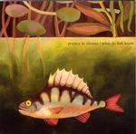

Home Artist links Label link

Poetica In Silentio - What Do Fish Know
| Artist: | Poetica In Silentio |
| Title: | What Do Fish Know |
| Label: | Independent |
| Length(s): | 44 minutes |
| Year(s) of release: | 2003 |
| Month of review: | [10/2003] |
Line up
Jurtko Moerbeek - lead vocals, guitar
Daan Haeyen - guitar, flute, melodica, vocals, keyboard
Erwin van den Broek - bass
Ruben van den Burgh - drums, vocals
Christine Vermeulen - violin, vocals
Tracks
| 1) | Intro | 0.32
|
| 2) | Behind The Door | 3.51
|
| 3) | Beggars Banquet | 4.05
|
| 4) | Paper Ships | 2.58
|
| 5) | The Dance | 6.50
|
| 6) | Sweet Lies | 2.56
|
| 7) | Voorbehoed | 5.13
|
| 8) | Tell Me | 3.18
|
| 9) | Who Is You | 3.33
|
| 10) | Luck | 4.04
|
| 11) | Behind The Remix | 3.08
|
| 12) | Who Is You (reprise) | 3.55
|
Summary
This is the second full length release by Dutch band Poetica In Silentio.
The music
This album's predecessor already was something of a mongrel if you consider musical vein, and that seems to have increased only with this album. Behind The Door has a guitar riff that is most rocky, the vocals reminding of Belgian bands such as Deus. But the flute has a very Tull feel about it. Beggars Banquet starts a rather melodic guitar track, with clear percussion, sort of in an Alquin vein. The moog sounds bring an even more progressive feel to the fore, as much as the violin towards the end is very gypsy, and makes for a mixture that reminds me a bit of the Canadian Existence. Paper Ships is based on a metalic riff played more gently, during the mid track section with a brief crimsonesque intermezzo, later melancholic violin too. Great track. The melancholy flute of the dance with the somewhat off sounding voice reminds of Supersister. Sweet Lies is a lot more rocky, both in vocals and guitar, although the very present violin shows the relativity of it all. Progressive tracks in Dutch are rather rare. Voorbehoed is one, on the other hand it might be said that the track fits in well enough with the material of some Dutch languaged rock bands such as Blof or The Scene. This track is more normal, not looking for the frontiers as much as the others. Tell Me is a rather vocal track, but with the aggresive sounding vocals and the mostly strongly played acoustic guitar it is every bit as odd as other tracks, as is the classical intermezzo. Who Is You is very much based on violin and a guitar line that is somewhat technical, the vocals taking the back seat for most of the track. One with ample leg room, though. Luck is vocals with flute, guitar just accompanying, a track threatening to go by just a little too easily until the guitar roars towards the end. Behind The Remix is a remixy version of Behind THe Door, with the vocals being put through a vocoder. This vocoder like sound also is with us on the Who Is You reprise.
Conclusion
This album contains a bit of the spirit of Dutch seventies progressive bandsas Alquin and Supersister. Twenty or thirty years later this has started to sound a lot more alternative, rock oriented, resulting in a sound that is more similar to the Belgian experimental alt band Deus than it is purely progressive. This is, however, a more progressive take on that sort of material, with that very worthwhile. A slight negative point: the album is just 44 minutes, including the seven minutes of alternative version material on it.
© Roberto Lambooy